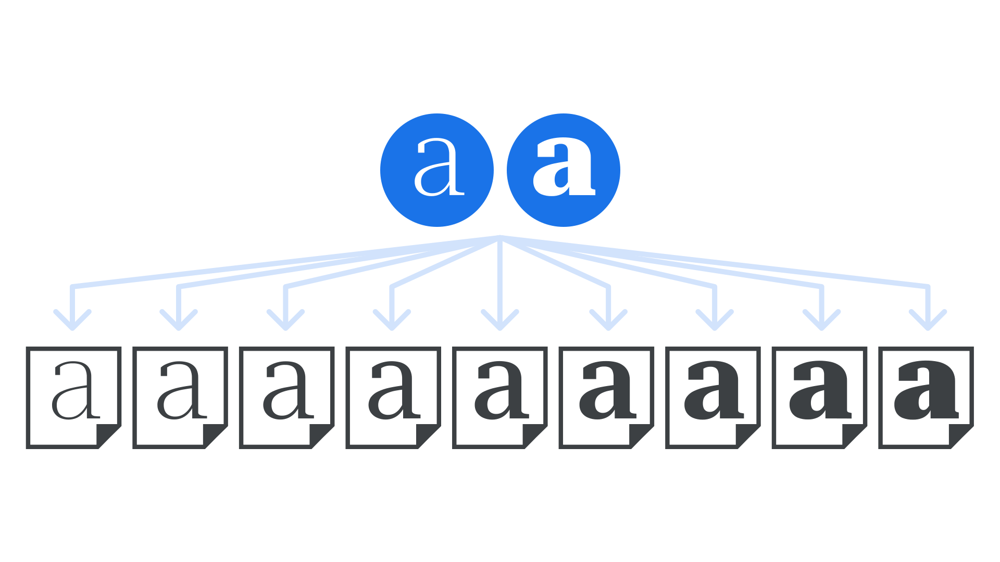

Masters
By Google Fonts Knowledge contributors · Google Fonts Knowledge.
Original article · Source on GitHub · CC BY-SA 4.0. Text, illustrations and existing credits reproduced from the licensed Knowledge repository. Open Shelf adapted the layout and links; these adaptations are also CC BY-SA 4.0. No endorsement implied.
A master is a complete set of glyphs designed in one particular style within a type family. Often, several masters are designed to work together so that intermediate weights can be made automatically. For example, a Light master and a Bold master can be interpolated to generate a Regular weight.
Although it’s type designers who are most used to working with masters in font editing software, variable fonts have the masters embedded, and can generate intermediate instances on demand, according to requests from the end user.

It’s possible to create a typeface with many weights using two masters at the extreme ends—perhaps a master for the Hairline weight and a master for the Black weight—but, in practice, an extra master is often used to fine-tune the middle of the spectrum.
Generally speaking, the more instances desired (i.e. the greater the overall weight variation), the more masters are required.